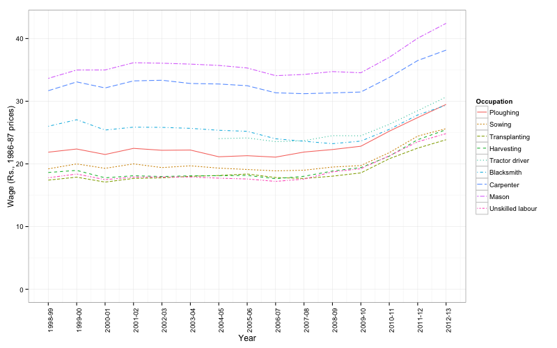
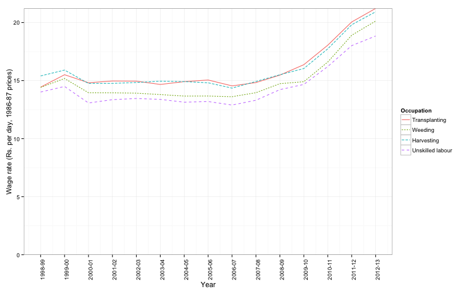

The NSSO/Labour Bureau series “Wage Rates in Rural India” is compiled by the NSSO and the Labour Bureau, Shimla. NSSO compiles these data and publishes them in a quarterly bulletin “Prices and Wages in Rural India (New Series)”. Labour Bureau also compiles the same data and publishes them in the Indian Labour Journal and separately in a publication called the “Wage Rates in Rural India”.
Yoshifumi Usami took the monthly data from Labour Bureau and has digitised them. He has very kindly contributed them to indianstatistics.org.
Download zipped csv file containing monthly data from here. Data taken from here should be cited as follows:
Usami, Yoshifumi (2014), The NSSO/Labour Bureau Series on Wage Rates in Rural India, 1998-99 to 2012-13, Statistics on Indian Economy and Society, http://www.indianstatistics.org/wrri.html
Technical Working Group on Rural Retail Prices set up by the NSSO in 1974 recommended that data on rural wages be collected along with data on rural prices. This recommendation was implemented by NSSO since July 1986. However, systematic compilation and release of data started only from April 1998. The series is based on data collected by NSSO along with data on rural prices from about 600 villages. The selected occupations for which daily wage rates are collected every month are as follows:
Methodology for data collection is described here. The relevant section of the Schedule 3.01(R) used for collection of data on wages can be seen here.
The estimation methodology is described as follows:
The daily wage rate data received from the field are first normalized for eight working hours a day. The simple arithmetic average of these normalized daily wage rates is worked out for each of the 20 states. The average wage rates at all-India level are derived by dividing the sum total of wages of all the 20 states by the number of quotations. These averages are restricted only to those occupatio ns where the numbers of quotations are five or more in order to avoid the apparent inconsistency in wages paid to different categories of workers on account of differences in number of quotations. The month-wise average daily wage rates are thus worked out at State level and also at all-India level are released regularly to the users through various sources .
It is of note that no detailed survey of employment and wages is conducted among workers to collect these data. Vllage-level officials like sarpanch or patwari are the primary informants for the data for the NSSO/Labour Bureau wage series.
Table 1 shows the number of NSS regions, strata and sample villages for collection of price and wage statistics. For this purpose, within each NSS region, individual districts or groups of adjoining districts are treated as separate strata.
Wage and price statistics are obtained from a constant sample of 600 villages. For each village, a single schedule is supposed to be filled on the basis of information provided by the village official. Actual number of schedules received in any month is a little lower than 603. For example, as seen in Table 2, number of actual schedules received in a month varied between 555 and 571 during July-December, 2012 period.
More importantly, mainly because of lack of existence of a particular occupation in a village in a particular month, the number of schedules containing wage information for a particular occupation can be considerably lower. As shown in Table 2, for male workers, the highest number of observations were reported for masons, carpenters and ploughing workers during July-October, 2012 period. For sowing, weeding, transplanting and harvesting, number of observations in a month were between 200 and 400. For threshing and winnowing, there were less than 200 observations in any month during this period. In case of women workers, for all occupations, information was available from less than 300 schedules. For threshing and winnowing, number of schedules containing information on wages was less than 100 in most months during this period. Information on wages for ploughing workers was reported in a few schedules despite the fact that ploughing (in particular, bullock ploughing) is rarely done by women in most parts of India.1
It is also worth noting that while number of reported observations vary across occupations and States, in some cases, data are reported in all months even for operations like ploughing, harvesting and threshing, which are mostly done only in specific months in a year.
The sample size used for collection of these statistics is remarkably thin in view of the vast and increasing heterogeneity in conditions of rural labour markets.2 Given the informality of rural labour markets, variations across occupations, tasks and crops, variations in implements, techniques and technology, and variations in forms of labour hiring, it is remarkable that the data are collected from only one respondent for every 2.28 lakh agricultural workers in the country!
Such a thin sample survey, using village-level officials rather than workers as informants, is not good enough for estimation of wages when there are wide variations in types of contracts on which workers are hired. Schedule 3.01(R) is designed to collect data on daily wage rates. For occupations that are done primarily or exclusively on piece-rated contracts, a phenomenon increasingly widespread in rural India, hours of work and payments can vary considerably across workers. Using a village-level informant to just fill-in a single number as normal hours of work or daily wage rates is likely to reflect subjective bias of the very few informants that provide data on rural wages.
| Sl.No. | State | Region | Strata | Sample village | Number of agricultural labourers, 2011 |
|---|---|---|---|---|---|
| 1 | Andhra Pradesh | 4 | 18 | 54 | 16102617 |
| 2 | Assam | 3 | 8 | 27 | 1814075 |
| 3 | Bihar (including Bihar) | 3 | 13 | 39 | 22171202 |
| 4 | Gujarat | 5 | 10 | 30 | 6481295 |
| 5 | Haryana | 2 | 4 | 12 | 1405956 |
| 6 | Himachal Pradesh | 1 | 3 | 9 | 170279 |
| 7 | Jammu & Kashmir | 3 | 5 | 21 | 498531 |
| 8 | Karnataka | 4 | 11 | 36 | 6737213 |
| 9 | Kerala | 2 | 5 | 21 | 1083003 |
| 10 | Madhya Pradesh (including Chhattisgarh) | 7 | 23 | 69 | 16586023 |
| 11 | Maharashtra | 6 | 18 | 54 | 12720993 |
| 12 | Manipur | 2 | 2 | 9 | 90644 |
| 13 | Meghalaya | 1 | 2 | 9 | 192223 |
| 14 | Orissa | 3 | 8 | 33 | 6618943 |
| 15 | Punjab | 2 | 5 | 15 | 1474732 |
| 16 | Rajasthan | 4 | 7 | 21 | 4733917 |
| 17 | Tamil Nadu | 4 | 11 | 33 | 8408101 |
| 18 | Tripura | 1 | 3 | 9 | 338922 |
| 19 | Uttar Pradesh (including Uttarakhand) | 5 | 20 | 60 | 19283420 |
| 20 | West Bengal | 4 | 11 | 39 | 9843816 |
| Total (All-India) | 66 | 187 | 600 | 136998308 |
Note: Number of agricultural labourers refers to total number of main and marginal agricultural workers as per Census 2011.
| S. No. | Occupation | July | August | Sep | Oct | Nov | Dec |
|---|---|---|---|---|---|---|---|
| Male | |||||||
| 1 | Ploughing | 428 | 392 | 358 | 350 | 365 | 349 |
| 2 | Sowing | 360 | 338 | 305 | 298 | 326 | 316 |
| 3 | Weeding | 268 | 302 | 332 | 300 | 280 | 259 |
| 4 | Transplanting | 232 | 266 | 204 | 174 | 176 | 154 |
| 5 | Harvesting | 218 | 209 | 222 | 310 | 367 | 369 |
| 6 | Winnowing | 103 | 110 | 104 | 117 | 147 | 172 |
| 7 | Threshing | 95 | 95 | 92 | 122 | 149 | 188 |
| 8 | Picking | ||||||
| 1) Cotton | <5 | 5 | 13 | 7 | 11 | 16 | |
| 2) Jute | <5 | <5 | <5 | <5 | <5 | <5 | |
| 3) Tea | <5 | <5 | <5 | <5 | <5 | <5 | |
| 4) Others | 31 | 31 | 25 | 41 | 55 | 56 | |
| 9 | Herdman | 149 | 157 | 149 | 153 | 141 | 149 |
| 10 | Well digging | 106 | 98 | 96 | 102 | 100 | 108 |
| 11 | Cane Crushing | 39 | 40 | 36 | 40 | 47 | 58 |
| 12 | Carpenter | 534 | 521 | 513 | 515 | 517 | 512 |
| 13 | Blacksmith | 367 | 365 | 356 | 355 | 356 | 367 |
| 14 | Cobbler | 230 | 228 | 225 | 226 | 223 | 232 |
| 15 | Mason | 533 | 525 | 513 | 519 | 523 | 514 |
| 16 | Tractor Driver | 370 | 376 | 380 | 373 | 356 | 377 |
| 17 | Sweeper | 65 | 60 | 62 | 65 | 68 | 71 |
| 18 | Unskilled labour | 550 | 542 | 533 | 536 | 540 | 531 |
| Female | |||||||
| 1 | Ploughing | 18 | 14 | 11 | 13 | 16 | 16 |
| 2 | Sowing | 197 | 197 | 178 | 172 | 171 | 178 |
| 3 | Weeding | 227 | 271 | 315 | 284 | 235 | 255 |
| 4 | Transplanting | 206 | 239 | 188 | 163 | 144 | 158 |
| 5 | Harvesting | 173 | 164 | 183 | 245 | 311 | 317 |
| 6 | Winnowing | 66 | 69 | 67 | 76 | 105 | 120 |
| 7 | Threshing | 63 | 57 | 59 | 71 | 93 | 115 |
| 8 | Picking | ||||||
| 1) Cotton | <5 | 5 | 11 | 7 | 10 | 23 | |
| 2) Jute | <5 | <5 | <5 | <5 | <5 | <5 | |
| 3) Tea | <5 | <5 | <5 | <5 | <5 | <5 | |
| 4) Others | 33 | 27 | 22 | 40 | 71 | 63 | |
| 9 | Herdman | 35 | 37 | 37 | 33 | 32 | 31 |
| 10 | Well digging | 23 | 17 | 17 | 22 | 21 | 27 |
| 11 | Cane Crushing | 8 | 9 | 6 | 6 | 11 | 15 |
| 12 | Carpenter | <5 | <5 | <5 | <5 | <5 | <5 |
| 13 | Blacksmith | <5 | <5 | <5 | <5 | <5 | <5 |
| 14 | Cobbler | <5 | <5 | <5 | <5 | <5 | <5 |
| 15 | Mason | <5 | <5 | <5 | <5 | <5 | <5 |
| 16 | Tractor Driver | <5 | <5 | <5 | <5 | <5 | <5 |
| 17 | Sweeper | 39 | 35 | 38 | 36 | 42 | 47 |
| 18 | Unskilled labour | 385 | 390 | 381 | 384 | 383 | 386 |
| Total number of schedules submitted | 571 | 563 | 555 | 561 | 568 | 565 |
Source: http://mospi.nic.in/Mospi_New/upload/RPC_July_Sep2012.pdf and http://mospi.nic.in/Mospi_New/upload/RPC_Oct_Dec2012.pdf
Yoshifumi Usami has analysed detailed trends of rural wages using WRRI data (\cite{usamiwages2011} and \cite{usamiwages2012}). Usami has very kindly contributed monthly WRRI data for selected occupations that he digitised. Data digitised by him refer to following occupations:
A. Agricultural occupations
B. Non-agricultural occupations
Download zipped csv file containing monthly data from here. Data taken from here should be cited as follows:
Usami, Yoshifumi (2014), The NSSO/Labour Bureau Series on Wage Rates in Rural India, 1998-99 to 2012-13, Statistics on Indian Economy and Society, http://www.indianstatistics.org/wrri.html
In comments, entries marked “outlier” are extreme-values that were separately verified from the originals (to ensure that these were not data entry errors). For entries marked “Less than five quotations”, wage data were not reported in the original data because less than five sample schedules provided information for that item.
Figures 1 and 2 show trends of all-India average annual wages for different types of male and female workers using these data.

Figure 1: Daily wages of male workers, selected occupations, rural India (Rs., 1986-87 prices)

Figure 2: Daily wages of female workers, selected occupations, rural India (Rs., 1986-87 prices)
In these months, among other States, wages were reported for women ploughing workers in schedules from Andhra Pradesh, Gujarat, Karnataka, Madhya Pradesh, Maharashtra, Meghalaya, Orissa, Rajasthan and Uttar Pradesh.
This is further divided in four sub-samples, for which data are collected in different weeks of the month, to average out week-by-week variations in prices (since data on wages are collected along with data on prices).